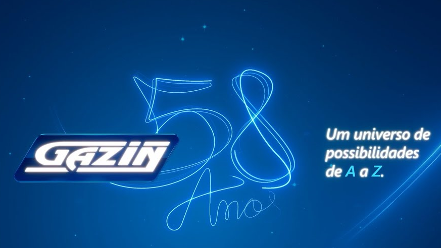

Empresa Gazin
Essa é uma empresa do Paraná, que busca sempre o melhor para o cliente com atendimentos de alta qualidade, e sempre muito atencioso com todos. A Gazin é uma das melhores empresas pra se trabalhar no Brasil. Esse ano a Gazin irá completar 58 anos, de muita história e qualidade, essa não é uma simples empresa, é um universo de possibilidades, de A a Z.

Como a empresa foi criada?
Ter a capacidade de enxergar oportunidades em meio a adversidades foi o que deu início a história do Grupo Gazin! Mário Gazin tinha 16 anos quando, com a ajuda de seu pai, vendeu um jeep que tinha na época, e comprou a loja em que trabalhava e fundou a primeira loja Gazin no dia 13 de dezembro de 1966 na cidade de Douradina, no interior do Paraná.

O que a empresa tem a oferecer para o cliente
| Gazin Atacado | Gazin Creed |
|---|---|
| Gazin Auto Posto | Gazin Seguros |
| Gazin Colchões | Gazin Viagens |
| Gazin Consórcio | Gazin Varejo |
Jeito Gazin
A cultura de uma empresa, ajuda muito a definir como ela funciona internamente, o tipo de ambiente que é criado
pelos funcionários que trabalham nela, e também o valor que a empresa da aos clientes e parceiros dela. A cultura
de uma organização, é uma coisa que cresce junto com a empresa, vai crescendo e se aperfeiçoando, com as suas pessoas.
E a Gazin é realmente uma empresa diferenciada, que faz sua cultura ser um dos segredos para o sucesso.
E isso não são apenas algumas palavras em vão, aqui os funcionários vivem todo dia essa cultura. Aqui as pessoas realmente
estão comprometidas uns com os outros e também com a empresa, estão sempre trabalhando por algo ainda maior.


Aqui está o link para o site oficial da Gazin https://www.gazin.com.br/